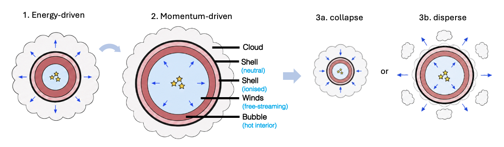
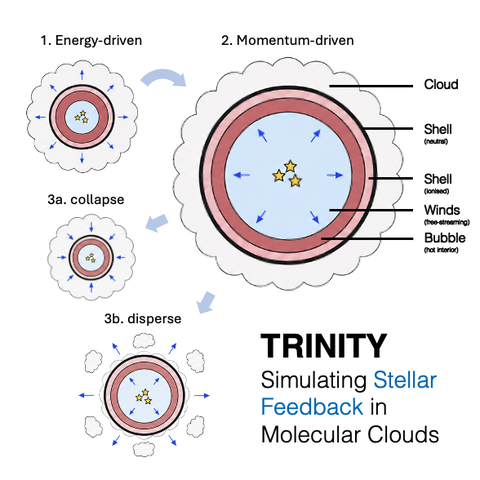
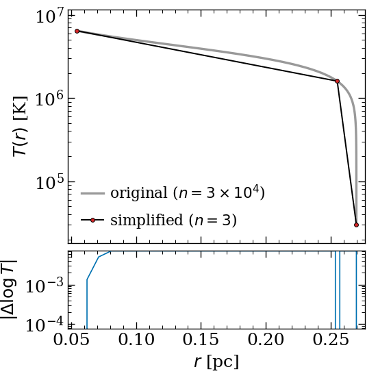
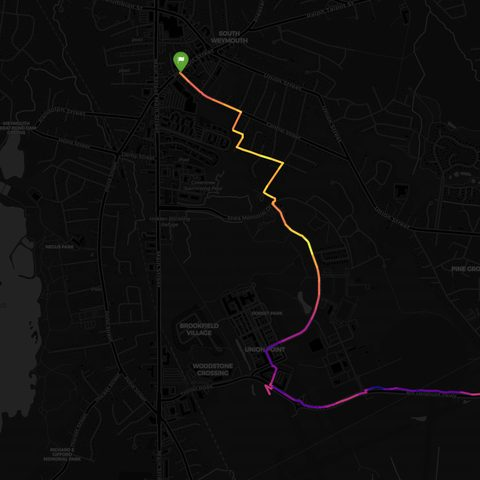
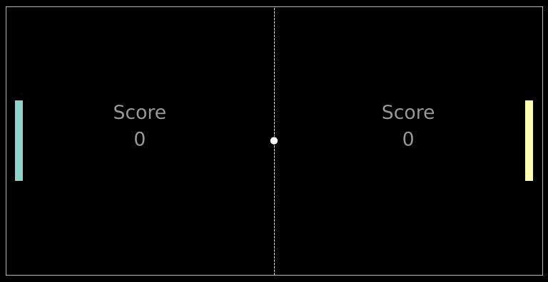
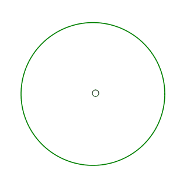

PhD candidate in astrophysics, Universität Heidelberg
Hello! I am interested in the galactic baryon cycle, focusing on how young stars disperse their natal molecular clouds and redistribute gas into the surrounding interstellar medium. To do so, I develop TRINITY, a code that models the evolution of interstellar bubbles under the influence of important stellar feedback processes (stellar winds, photoionised gas and radiation). I also work with observations from the PHANGS and SDSS‑V Local Volume Mapper surveys to test these models against real star‑forming regions.
CV · GitHub · ADS · ORCID · LinkedIn · jiaweiteh.astro (at) gmail.com

I am a PhD candidate at the Institut für Theoretische Astrophysik, Heidelberg University, where I work with Ralf Klessen, Simon Glover and Kathryn Kreckel. I am also part of the International Max Planck Research School for Astronomy and Cosmic Physics, and a member of the PHANGS and SDSS-V/LVM collaborations and the ECOGAL ERC Synergy consortium. Before coming to Heidelberg, I studied astronomy and astrophysics at the Australian National University and graduated with first-class honours. I also did summer research projects at CSIRO, Leiden Observatory and Swinburne University of Technology.
Molecular clouds in nearby galaxies are cleared within a few million years of forming their first massive stars, before any of those stars explode as supernovae. TRINITY follows the pre-supernova feedback channels together — stellar winds, direct and dust-reprocessed radiation pressure, and the pressure of photoionised gas — by integrating the equation of motion of a single swept-up shell from the first winds to the shell's fate: dispersal of the cloud, or stalling and re-collapse. It succeeds WARPFIELD, keeping that code's speed while adding photoionised-gas pressure as an explicit driver and a choice of cloud density profile. Paper I presents the model and its validation; I am now using it to survey cloud mass, density, star-formation efficiency and metallicity.
TRINITY predicts how bubbles grow and expand, which feedback processes drive them, and how many ionising photons escape their H II regions. These predictions can be tested against observations of nearby star-forming regions.
I am currently using spectroscopy from the SDSS-V Local Volume Mapper to study the Rosette Nebula and investigate how its central star cluster has shaped the surrounding gas. I also contribute TRINITY models to studies of a young bubble in the central starburst of NGC 253, observed with JWST, and of neutral atomic hydrogen around the Orion Nebula.
Before working on TRINITY, I studied how many ionising photons escape from H II regions. In my first paper, I combined LEGUS star-cluster catalogues with SIGNALS spectroscopy of NGC 628 to constrain the escape fraction of Lyman-continuum photons from individual regions. I later contributed to a PHANGS study of the stellar associations powering H II regions and the escape of their ionising radiation.

TRINITY is a one-dimensional code for modelling how stellar feedback drives expanding bubbles inside molecular clouds. Given a cloud's mass, density profile, star-formation efficiency and surrounding conditions, it follows the radius, velocity, thermal state and forces acting on the expanding shell. It can model whether the cloud is dispersed or the shell stalls and eventually collapses again.
Written in Python and released under GPL v3.

astrosimplify reduces the number of points in one‑dimensional data without losing important features, such as sharp transitions, peaks and troughs. I made it for working with astrophysical profiles, including radial density and temperature distributions, stellar tracks and spectra. It only requires NumPy and is released under the MIT licence.
Full list on ADS.
Small things I wrote while teaching myself Python, 2022–2023.

gpx_vis 2023 Turns GPX tracks into interactive elevation maps GELATO 2022 A terminal quiz for German articles and verbs
BallGame 2022 A self-playing Pong screensaver, in matplotlib
BounceGame 2022 A ball bouncing in a circle under gravity and drag, in matplotlibOutside astronomy, I like hiking, taking photos, bouldering and playing the piano. I also enjoy picking a town more or less at random on a map and cycling there. And I probably spend more time than necessary thinking about colours in scientific figures.
jiaweiteh.astro (at) gmail.com
Institut für Theoretische Astrophysik, Zentrum für Astronomie
Universität Heidelberg
Albert-Ueberle-Straße 2, 69120 Heidelberg, Germany